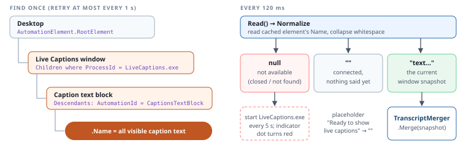
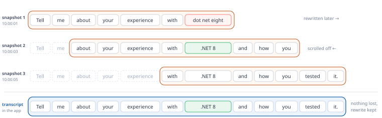

برنامهی Live Captions هیچ API یا فایلی برای بیرون دادن متنش ندارد. ولی هر برنامهی ویندوزی، برای ابزارهای
دسترسیپذیری (مثل screen reader)، درخت عناصرش را از راه UI Automation در اختیار میگذارد. CaptionRelay
دقیقاً مثل یک screen reader عمل میکند: عنصر متن زیرنویس را پیدا میکند و ویژگی Name آن را میخواند.

شکل ۴-۱ — سمت چپ: پیدا کردن عنصر یک بار انجام میشود و نتیجه cache میشود. سمت راست: هر ۱۲۰ میلیثانیه فقط یک ویژگی خوانده میشود.
سه حالت، نه دو حالت Three states
خروجی خواندن عمداً سهحالته است. مقدار null یعنی Live Captions در دسترس نیست (بسته است یا پنجرهاش پیدا
نشد)؛ رشتهی خالی یعنی پنجره هست ولی هنوز کسی حرف نزده (Live Captions تا اولین گفتار، به جای عنصر متن یک پیام
«آمادهام» نشان میدهد)؛ و هر متن دیگری snapshot فعلی پنجره است. اگر این دو حالت اول یکی بودند، نشانگر بیدلیل
«قطع» نشان میداد و اپ مدام سعی میکرد برنامهای را که در حال اجراست دوباره باز کند.
چرا poll کردن و نه رویداد؟
تضمینی نیست که این کنترل برای هر تغییر رویداد بفرستد، و حتی با رویداد هم باید کل متن دوباره خوانده شود.
خواندن یک ویژگی از یک عنصر cacheشده بسیار ارزان است؛ ده دقیقه کار فقط سه ثانیه CPU مصرف کرد.
رفتار قابل پیشبینی است: هر ۱۲۰ میلیثانیه یک snapshot، روی نخ خودش، با زمانبندیای که در تست کنترل میشود.
عنصر کهنه (stale)
وقتی پنجره بسته یا دوباره ساخته شود، خواندن عنصر cacheشده خطای COM میدهد. خواننده cache را دور میریزد و دوباره
جستوجو میکند، ولی حداکثر یک بار در ثانیه تا CPU هدر نرود.
متن روی صفحه هنگام شروع
هر متنی که موقع بالا آمدن اپ روی صفحه است مال یک گفتوگوی قبلی است. در فایل جلسه با برچسب
[SKIPPED] نوشته میشود ولی هرگز ارسال نمیشود.
ورودی واقعی چه شکلی است What the input really looks like
قبل از نوشتن الگوریتم ادغام، رفتار Live Captions با یک ضبطکننده (tools/CaptionRecorder) و یک گویندهی
مصنوعی (tools/tts/speak.ps1) اندازهگیری شد. نتیجه، شکل مسئله را عوض کرد:

شکل ۴-۲ — پنجرهی غلتان: کلمههای قدیمی از اول حذف میشوند و کلمههای آخر بعداً بازنویسی میشوند. رونوشت اپ باید هر دو را جذب کند.
اندازهگیریشده (فازهای ۲ و ۳)
یک Live Captions تازهاجرا، چهار دقیقه گفتار (۶۱۶ کلمه) را بدون اسکرول روی صفحه نگه داشت.
در یک اجرای دهدقیقهای، بعد از حدود ۴۳۰۰ تا ۴۸۰۰ کاراکتر (نزدیک ۸۰۰ کلمه) شروع به اسکرول کرد و ۱۱ بار، هر بار ۶۰ تا ۸۰ کلمه را دور ریخت.
کلمهها مدتها بعد از ظاهر شدن بازنویسی شدند: dot net eight به .net 8، forty two به 42، و I I I به III.
نتیجهی نهایی: فایل جلسه هر ۱۵۴۷ کلمه را داشت (۹۷٫۵٪ متن اصلی؛ بقیه خطای تشخیص خود Live Captions بود)، بدون تکرار.
گزینههای ردشده
تشخیص متن از تصویر (OCR) — سنگین، کند و پر از خطا؛ وقتی متن واقعی از راه UI Automation در دسترس است، دلیلی ندارد.
فرستادن «هر چه الان روی صفحه است» — متنی که اسکرول شده گم میشود و متنی که دوباره دیده شود تکراری فرستاده میشود.
IN AN INTERVIEW
Live Captions has no API, so I read it the way a screen reader does: UI Automation finds the caption text block
by process id and automation id once, caches it, and every 120 ms I read one property. The reader returns three
states — not available, connected with no text, or a snapshot — which keeps the indicator honest and the
auto-restart logic simple. Before designing the merge I recorded real sessions and learned that the window scrolls
60–80 words at a time and rewrites words long after they appear.
Interview questions
Why poll instead of subscribing to UI Automation events?
Events for this control are not guaranteed, and I would still have to re-read the whole text. Polling one
cached property is cheap — 3 s of CPU in 10 minutes — and gives deterministic timing.
How do you handle Live Captions being closed or restarted?
A failed read drops the cached element; finding is retried at most once per second, and the app starts
LiveCaptions.exe again every 5 s while it is missing.
What did measuring first change?
It showed the input is a rolling, self-correcting window, so "diff the new text" cannot work. That drove the
alignment-based merger in the next chapter.